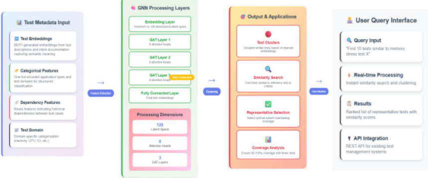
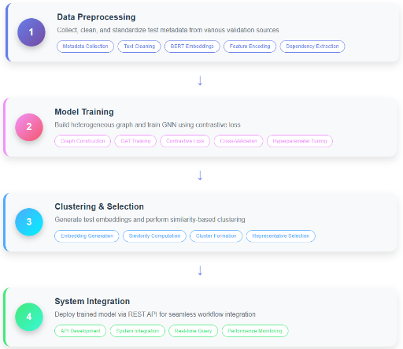

Test Smarter, Not Harder: GNN-Powered Automation for Post-Silicon Validation
Test Smarter, Not Harder：基于 GNN 的 Post-Silicon 验证自动化测试选择
简介
论文针对 post-silicon validation 中数千条测试跨多 domain 与 SKU 配置被盲目全量执行、而人工专家筛选测试子集主观且耗时的问题，提出一个仅基于测试元数据的 GNN 自动测试选择框架。方法将测试语料建模为异构图，用 BERT 编码 intent 描述文本，拼接 one-hot 类别特征与历史依赖特征后，经三层 GAT（8 attention heads、skip connection）映射到 128 维嵌入空间，以对比学习训练，再通过相似度聚类选取代表性测试子集，全程无需 performance counter、实时采集或人工干预。在 100 条测试的子集上，相比专家分组取得 F1 0.8，测试执行开销降低 30-50%，coverage efficiency 保持 90%，整体验证执行时间缩短 40-60%。作者明确承认目前仅为小规模初步实现，工业级数据上的泛化性有待验证。
问题
Post-silicon validation 需在多 domain（CPU、memory subsystem、I/O、power、thermal）与多 SKU 配置下执行数千乃至数万条测试，全量执行导致设备占用、冗余劳动与反馈延迟；传统依赖专家人工筛选测试子集，主观、不一致且可达数周，且随团队演进测试意图知识流失；现有自动化方法集中于 runtime monitoring 与 stress testing，无法回答'应首先选择哪些测试、为什么'这一根本问题。
方法
将验证测试语料建模为异构图：节点为测试，节点特征由预训练 bert-base-uncased（768 维）编码的 intent 描述、one-hot 类别特征（20-50 维）与历史执行依赖特征（10-30 维）拼接为约 800-850 维向量；边编码多维相似关系。采用三层 Graph Attention Network（每层 8 attention heads）动态加权不同元数据关系，加 skip connection 防止 over-smoothing，投影到 128 维潜在空间并做 L2 归一化以支持 cosine 相似度计算；训练采用对比学习目标使相似测试嵌入接近。随后基于嵌入做相似度聚类选取代表性测试子集，并计划通过 REST API 集成到测试管理流程。整个方法为 metadata-only，不需要 performance counters、实时数据采集或人工干预。
关键结果
相比专家生成的测试分组，F1-score 达 0.8
测试执行开销降低 30-50%
coverage efficiency 保持 90%
整体验证执行时间减少 40-60%（更少测试执行与自动选择流程的叠加效果）
评估基于 100 条测试的子集，涵盖 protocol、driver 与 functional checks
创新点
与已有工作的区别：(1) 区别于 pre-silicon 验证中依赖大量标注数据或 code coverage 指标的测试优先级/精简方法，本方法 metadata-only，不需要 performance counters、实时采集与人工干预；(2) 针对post-silicon 环境特有约束（limited observability、异构测试类型、文档不全的 legacy 测试套件、快速选择需求）提出自动化测试选择，填补该方向空白；(3) 选用 GAT 而非 GCN，对异构测试元数据图动态加权，自动学习哪些元数据关系更重要。
团队参考意义
相关度级别：medium
命中能力域：2.7 CyberSec/自动化
理由：论文主题是 post-silicon validation 的测试选择自动化，不属于团队 2.1-2.6 任一能力域的核心技术（非 DFT/ATPG、BSCAN、OCC/LBIST、HBM4/UCie 测试、功能安全或 fault simulation 本身）；但其 AI/ML 自动化方法论与 2.7 中'AI/agent 辅助 DFT 流程'方向直接契合：metadata 驱动的嵌入+聚类测试选择思路可迁移到 ATPG pattern/测试集筛选、门级仿真回归精简、DFT release package 代表性测试子集遴选等团队场景。因未直接命中任一能力域核心技术，且论文处于小规模初步验证阶段，评为 medium。
建议动作：作为方法参考存档
中文全文

Test Smarter, Not Harder: GNN-Powered Automation for Post-Silicon Validation
更聪明地测试，而非更辛苦地测试：基于图神经网络（GNN）的后硅验证自动化
Venkata Ajay Kolla Venkata.ajay.kolla@intel.com
摘要 - 后硅验证在现代半导体开发中面临重大挑战，尤其是在管理跨多个领域和多个库存单位（SKU）的庞大测试套件方面。传统方法不加区分地执行数千项测试，导致严重的低效率和资源浪费。手动测试选择严重依赖领域专业知识，既容易出错又耗时。本文提出了一种新颖的基于图神经网络（GNN）的框架，通过对测试元数据（包括意图描述、分类属性和历史依赖关系）进行相似性分析，实现智能测试选择的自动化。该方法利用图注意力网络（GAT）创建有意义的测试嵌入，从而实现高效聚类并选择代表性测试。初步仿真结果表明，与专家生成的测试分组相比，所提出的元数据驱动方法达到了 0.8 的 F1 分数，同时将测试执行开销降低了 30-50%，并保持了 90% 的覆盖效率。
关键词 - 后硅验证（PSV）、图神经网络（GNN）、图注意力网络（GAT）、测试套件优化、机器学习（ML）、片上系统（SoC）、元数据驱动的测试选择、库存单位（SKU）、基于 Transformer 的双向编码器表示（BERT）
I. INTRODUCTION
半导体行业面临着日益沉重的压力：既要缩短上市时间，又要对日益复杂的片上系统（SoC）设计保持严格的验证标准。后硅验证（PSV）是指对制造出的半导体芯片进行测试，以验证其功能、性能以及是否符合设计规范的过程，它构成了开发周期中的一个关键瓶颈。与基于仿真模型开展的前硅验证不同，PSV 必须应对真实硬件约束、有限的可观测性以及制造器件的巨大成本。
现代验证团队通常需要管理包含数千个独立测试的测试套件，这些测试涵盖多个领域，包括 CPU 功能、存储器子系统、I/O 接口、电源管理和热控制。这些测试必须在众多库存单位（SKU）和配置组合上执行，由此形成的验证矩阵每个周期很容易膨胀到数万次执行。运行所有可用测试虽然能保证全面性，却会引入严重的低效问题：设备被占用去执行冗余测试，工程精力被分散用于管理臃肿的测试套件，而反馈的延迟则拖慢了设计迭代。
传统上，验证团队依靠专家驱动的测试选择来缓解这一问题。工程师手动挑选出他们认为最能代表给定周期验证目标的测试子集。尽管这种方式利用了宝贵的领域专业知识，但它主观、不一致且耗时，对于大规模测试套件而言往往长达数周。随着团队的演变，测试意图背后的原始依据常常丢失，导致机构知识碎片化，并进一步加剧了低效。现有的 PSV 自动化方法主要聚焦于运行时监控和压力测试，这类方法需要在执行过程中从硬件采集大量数据。这些技术尽管在特定场景中行之有效，却未能解决一个根本问题：究竟应当首先选择哪些测试，以及为什么？在当前的工业实践中，一种智能化、可扩展的测试选择方法在很大程度上仍然缺位。
本文引入的正是这样一种方法：提出了一种基于图神经网络（GNN）的框架，该框架将验证测试空间建模为一个异构图，其中节点表示各个测试，边则编码由元数据导出的关系，这些元数据包括文本描述、分类属性和历史依赖关系。该框架利用图注意力网络（GAT）自动学习哪些关系最为重要，从而实现有效的
Problem Formulation
测试选择问题被形式化为基于图的测试元数据相似性搜索。考虑一个验证测试语料库：

聚类与代表性测试的选择。与运行时监控方案不同，该方法仅依赖元数据，即无需性能计数器、无需实时采集，也无需人工干预。本文的贡献如下：
II. RELATED WORK
将机器学习技术应用于硬件验证是一个新兴的研究领域，此前专门针对流片后（post-silicon）环境中自动化测试选择的研究工作十分有限。本节考察两个方面的相关研究：面向硬件测试的机器学习，以及为本文方法提供启发的图神经网络（GNN）应用。
现有研究大多集中于流片前（pre-silicon）验证。Chen 等人 [4] 在寄存器传输级（RTL）验证中使用监督学习进行测试用例优先级排序，提升了缺陷检测效果，但需要大量标注数据，且仅在仿真中运行。Hu 和 Liu [5] 采用聚类技术进行测试套件缩减，在保持故障检测能力的同时缩短了执行时间。然而，他们对代码覆盖率指标的依赖以及对仿真的关注限制了其在流片后环境中的适用性。与此同时，GNN 方面的进展在结构化数据分析和相似性驱动的任务中展现出良好前景。Hamilton 等人 [1] 提出了 GraphSAGE，实现了对未见节点的归纳学习，这在持续新增测试的验证场景中尤为相关。Veličković 等人 [2] 提出了图注意力网络（GAT），能够动态地为节点关系的重要性分配权重，这一能力非常适合异构测试元数据。Ying 等人 [3] 提出了面向大规模推荐系统的 GNN——PinSage，展示了基于图的相似性搜索在海量异构数据集中的有效性。
尽管取得了上述进展，将机器学习应用于流片后验证挑战仍存在显著空白。现有的硬件验证方法通常需要大量标注训练数据，或依赖于在流片后环境中难以获取的指标。基于性能的方法虽然直观，但其引入的复杂性和开销对于测试选择应用而言可能难以证明其合理性。最为关键的是，已有工作尚未针对流片后验证环境的独特特性：可观测性受限、测试类型异构、遗留测试套件文档不完整，以及需要快速做出测试选择决策。本文提出的工作试图通过开发一个专门针对流片后验证的约束与需求而设计的框架来弥补这些空白。
III. METHODOLOGY
以及相关的元数据
其目标是学习嵌入向量：

使得每个嵌入向量都能同时捕捉测试之间的语义相似性与功能相似性。这些嵌入向量支持对具有代表性的子集进行聚类与选择，从而在保持覆盖率的同时将执行开销降至最低。从 768 维（BERT）降至 128 维的降维处理具有多重目的：（1）在图运算过程中提高计算效率，因为 GAT 层的计算量随嵌入尺寸呈二次方增长；（2）防止相似度计算中出现维数灾难；（3）构建一个统一的嵌入空间，以平衡文本语义与类别特征和依赖关系特征。之所以选择 128 维作为目标维度，是因为它既能提供足够的表征能力，又能在生产验证环境中保持实时推理所需的计算可行性。
Graph Construction
验证语料库被表示为一个异构图：
这种图结构能够对传统选择技术无法捕捉的多维关系进行建模。
1) Node Features
每个测试节点聚合三类特征：
2) Edge Construction
边在多个维度上编码相似性：
Graph Neural Network Architecture
该架构（图 1）基于图注意力网络（GAT），选择该网络的原因在于其能够动态地为不同的关系分配权重。与图卷积网络（GCN）不同，GAT 可以为特定邻居赋予更高的重要性，这在某些元数据链接比其他链接更为相关时至关重要。以下小节将更深入地介绍该架构：

1) Embedding Layer
原始节点特征经过拼接与线性变换。设 ℎ𝑖 表示词元（token）i 的隐藏表示，其由 BERT 嵌入、类别特征和依赖特征拼接而成，随后经过一次线性变换：
其中 𝑊0、𝑏0 为可学习参数，∥ 表示拼接操作。该变换将所有特征投影到一个 128 维的潜在空间中。
2) Graph Attention Layers
依次应用三个图注意力网络（GAT）层。每层采用 8 个注意力头来聚合特征：
where:

该机制实现了对测试关系的上下文感知加权。
3) Skip Connections
为防止过度平滑（over-smoothing，即更深的图神经网络（GNN）会使各节点的嵌入变得难以区分），加入了跳跃连接（skip connection）：
这在保留原始节点信息的同时，还能受益于学习到的关系特征。
4) Output Layer
最后的全连接层输出归一化后的嵌入：
normalize() 函数执行 L2 归一化，确保所有测试嵌入都位于单位超球面上。这使得用于聚类和选择的余弦相似度计算更加高效，因为归一化后的嵌入使余弦相似度可以简化为简单的点积运算。这些最终嵌入被用于相似度搜索和聚类。
Training Parameters
这种结构化的方法确保学习到的嵌入能够有效捕捉验证测试的语义、类别和历史特征，同时保持对大型工业数据集的可扩展性。
IV. IMPLEMENTATION
该实现遵循结构化的流水线，如图 2 所示，从数据预处理逐步推进到验证工作流中的部署。每个阶段都针对工业测试环境中的可扩展性和实际适用性进行了设计。
Data Preprocessing
测试元数据从多个验证来源聚合而来，包括文档仓库、执行日志和配置管理系统。预处理流水线对格式进行标准化，处理缺失或不完整的信息，并生成结构化的特征表示。

Model Training
The graph neural network is implemented using PyTorch Geometric, leveraging GPU acceleration for training and CPU-based inference for deployment. Graph Attention Networks (GATs) are employed to weigh different relationships dynamically, allowing the model to focus on more influential connections. The training uses a contrastive learning objective, encouraging embeddings of similar tests to be closer while dissimilar tests are pushed apart.
The model begins by processing heterogeneous input features from multiple sources. Test descriptions are encoded using the pre-trained bert-base-uncased model, producing 768-dimensional semantic embeddings that capture textual intent and functionality. Categorical metadata (domains, test types, SKU configurations) contributes 20-50 dimensions through one-hot encoding, while dependency features derived from historical execution patterns add another 10-30 dimensions. These multi-modal features are concatenated, resulting in combined feature vectors of approximately 800-850 dimensions per test.
This high-dimensional concatenated input undergoes dimensional reduction through the initial embedding layer, projecting all features into a unified 128-dimensional latent space. This reduction serves multiple critical purposes: (1) computational efficiency, as Graph Attention Network operations scale quadratically with embedding size, making 800+ dimensions computationally prohibitive for real-time inference in production environments; (2) feature


harmonization, ensuring textual, categorical, and dependency information contribute proportionally rather than being dominated by the dense BERT representations; and (3) regularization, preventing overfitting to high-dimensional semantic features while preserving essential relational information.
The 128-dimensional target was selected through empirical analysis balancing representational capacity with deployment constraints. Dimensions below 64 resulted in significant information loss, particularly in semantic similarity detection, while dimensions above 256 provided marginal improvements at considerable computational cost.
Clustering & Selection:
一旦生成了嵌入向量，基于相似度的聚类便会识别出具有代表性的测试子集。
System Integration
在部署方面，提出通过 REST API 将训练好的模型对外提供，该 API 可直接与测试管理工作流集成。
PERFORMANCE COMPARISON BETWEEN BASELINE AND PROPOSED APPROACH
| Approach | Functional Coverage (%) | Test Reduction (%) | Selection Time | F1 score |
|---|---|---|---|---|
| Expert-Defined Grouping(baseline) | 95 | - | Several days | - |
| Automated Framework (GAT) | 90 | 30-50 | < 10 minutes | 0.8 |
| Approach | Functional Coverage (%) | Test Reduction (%) | Selection Time | F1 score |
评估是在从具有代表性的流片后（post-silicon）领域中抽取的 100 项验证测试子集上进行的。这些测试用例混合了协议、驱动程序和功能检查，代表了真实世界的流片后验证场景。作为基线对比，采用了专家定义的分组。这些分组代表了资深验证工程师通常基于功能意图、覆盖率要求和既有领域知识对测试进行的人工分类。
所提出的框架基于 PyTorch 实现，并在测试元数据（意图描述、类别属性和依赖特征）上进行训练。采用图注意力网络（GAT）来学习用于聚类和选择的嵌入表示。
如表 1 所示，自动化框架实现了：
由于更少的测试执行次数与自动化选择流程相结合，整体验证执行时间减少了 40-60%。这一时间节省直接转化为更快的反馈周期和更低的实验室资源需求。虽然结果表明在该有限数据集上取得了可观的效率提升，但仍需要在工业工作负载上进行更大规模的评估以确认其泛化能力。
VI. CONCLUSION
本工作提出了一种基于图神经网络（GNN）的框架，用于流片后验证中的智能测试选择，仅利用意图描述、类别属性和历史依赖关系等测试元数据。通过摒弃人工专家驱动的聚类和基于性能监控的选择方式，所提出的方法相比专家定义的分组实现了 30-50% 的测试执行开销降低，并取得了 0.8 的 F1 分数，同时保持了近乎等效的覆盖率效率。这些改进通过降低计算资源使用、减少人工选择所需的工程投入以及加快产品启动周期，直接转化为切实的成本节约。
需要指出的是，本研究将理论阐述与初步实现相结合，目前的评估仅限于较小规模的数据集。将该方案扩展到工业规模的验证数据集，是充分确立其鲁棒性和泛化能力的必要下一步。尽管如此，研究结果凸显了基于元数据的 GNN 作为一条可行路径的前景，即在保持验证质量的同时，减少对代价高昂的人工选择的依赖。
证据核查
2 条证据未在原文中核对到